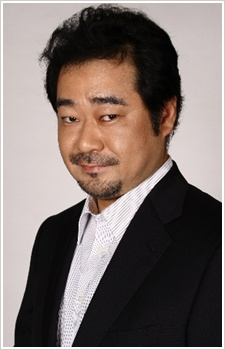
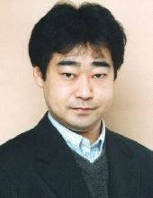

|  |
Masaki Aizawa is a Japanese voice actor. He is currently a freelancer. He voiced in Pokemon, Gintama, Death Note and One Piece.
|
 |
|---|
| |
Ghetsis Harmonia | Pokemon Black and White: Adventure in Unova | Ghetsis Harmonia is the boss of Team Plasma. He is one of the Seven Sage behind Team Plasma. His goal is to free Pokemon from humans. |